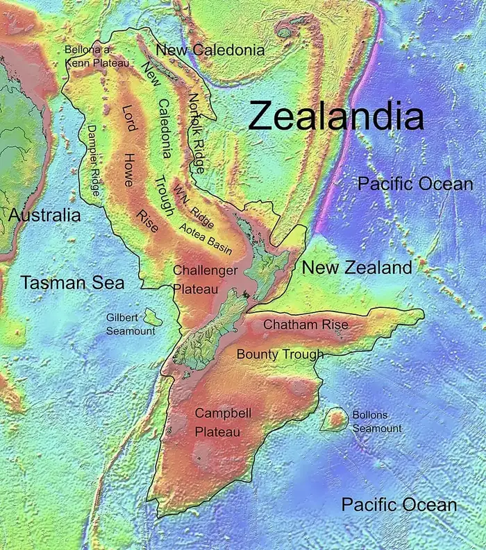
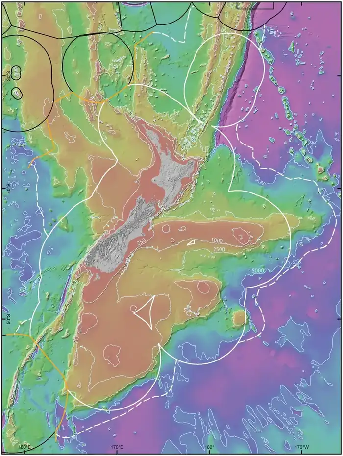

The continent
Zealandia — Te Riu-a-Māui in Māori — is a continental mass of about five million square kilometres in the southwest Pacific. About 94% of it is submerged, with New Zealand, New Caledonia and some island groups above water. It has continental crust: thicker, older and less dense than oceanic crust.
Maps, diagrams and images



The science
The term was coined in 1995, and a 2017 paper by Nick Mortimer and colleagues argued that it meets the criteria for a continent: elevation above the surrounding ocean floor, a wide area of continental crust, and clear boundaries. It separated from Gondwana and then subsided.
The claim is uncontroversial in geology, and its interest for this archive is that it is a genuine lost continent — one that no legend predicted.
Documented: the crust, the area and the boundaries.
Documented: the 2017 formal description.
Documented: its separation from Gondwana.
Not disputed: in geology.
The label: documented.
Why it is in the archive
Because a shelf full of imaginary lost continents needs the real one, and because it is more interesting than most of them.
Open resources on this topic
- BookZealandia, Saskatchewan: The heart of the finest grain producing district in the Dominion of Canada — Zealandia, Sask. Board of Trade (author) · 1910 (Internet Archive, free to read)
- BookClassic-Banjo - Music Library: Zealandia March — Joseph Wright (Internet Archive, free to read)
- BookLaronge, Jan v. Zealandia Capital (Internet Archive, free to read)
- PapersOpen-access articles: DOAJ · PubMed Central · Internet Archive Scholar
- BooksPublic-domain and borrowable copies: Open Library · Project Gutenberg · Google Books
More images
Cite this page
Momin, S. (2026). Zealandia. The Larger World Archive. https://drsamonline.github.io/LARGE_GLOBE/zealandia.htmlMomin, Sohil. “Zealandia.” The Larger World Archive, 2026, https://drsamonline.github.io/LARGE_GLOBE/zealandia.html.Momin, Sohil. “Zealandia.” The Larger World Archive, 2026. https://drsamonline.github.io/LARGE_GLOBE/zealandia.html.@misc{zealandia2026zealandia,
author = {Momin, Sohil},
title = {Zealandia},
year = {2026},
howpublished = {The Larger World Archive},
url = {https://drsamonline.github.io/LARGE_GLOBE/zealandia.html},
note = {Last reviewed 20 November 2026}
}Last reviewed 20 November 2026 · Corrections policy · this page is not peer reviewed
Sources for this page
- Wikipedia, “Zealandia” — the continenten.wikipedia.org
- Wikipedia, “Continental crust” — the criterionen.wikipedia.org
- Wikipedia, “Gondwana” — the supercontinent it leften.wikipedia.org
- Wikipedia, “Geology of New Zealand” — the visible parten.wikipedia.org